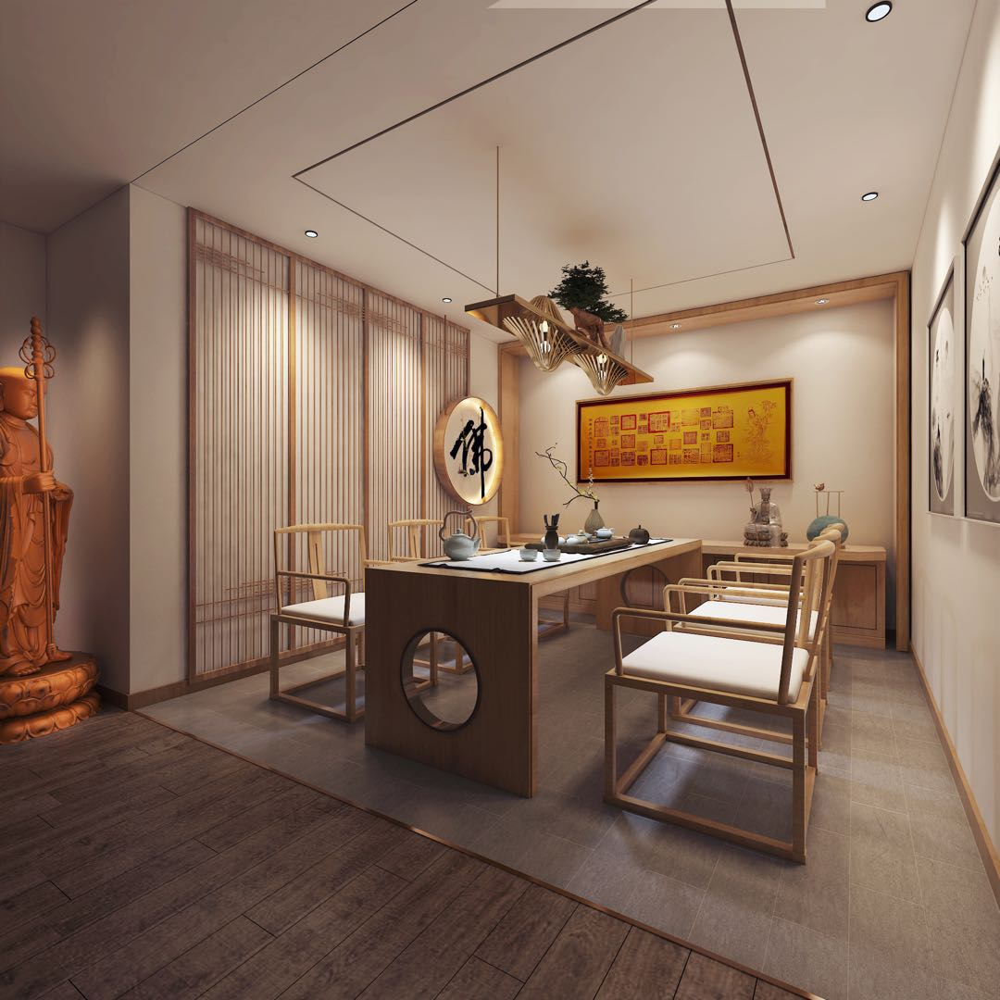
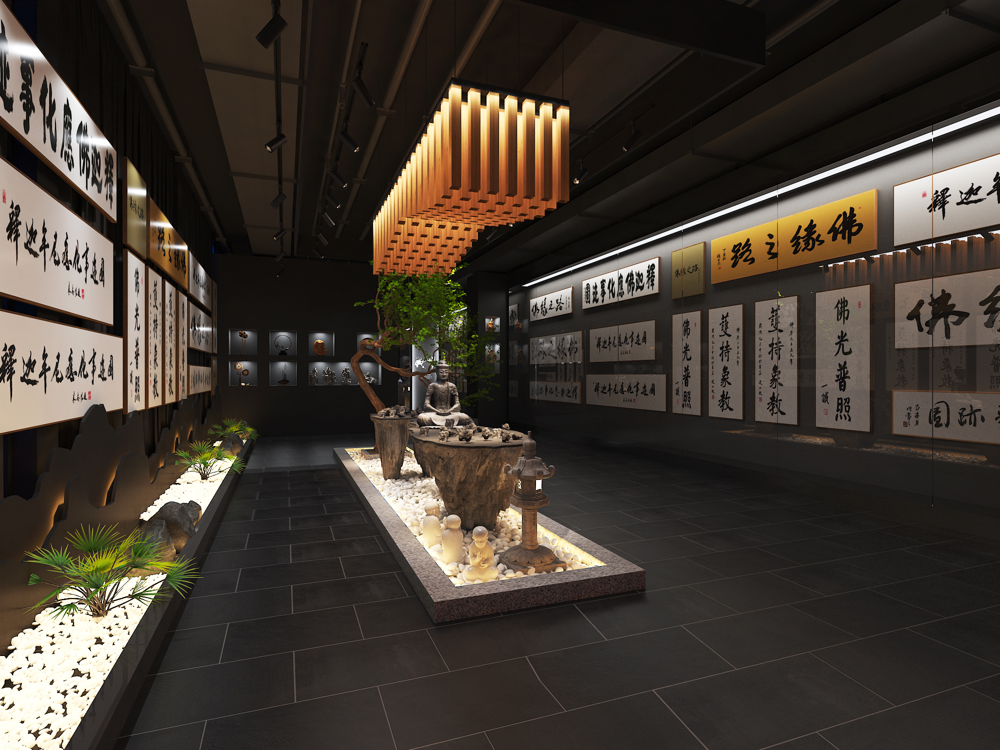

- 场馆介绍
- 最新动态
- 开放信息
- 大事记
佛缘之路艺术馆是“佛缘之路”品牌大本营，创办人正是 “佛缘之路-朝圣万里行”的发起人李进先生。艺术馆自2019年7月正式成立并向公众开放，“普及中华之优秀传统文化，弘扬佛教文化”是佛缘之路艺术馆的承办宗旨。
艺术馆是集“佛缘之路”成果展览、禅文化鉴赏、禅生活体验于一体的高端佛教文化艺术的展示交流平台。内设接待区、佛缘之路成果展示区、多功能活动区、茶室、休息会谈区、佛堂等多版块。未来，佛缘之路将利用此场馆，常年以周、月为节点开设禅文化展览及禅生活的体验活动，让您有所学，有所感，让心灵归家。
1.缘起
2015年10月1日，佛缘之路•朝圣祈福万里正式从海南三亚南山寺拉开序幕，一场中国历史上前所未有的大型佛教文化行走之旅，自此启程。
2.五台山传灯大典
2016年7月3日，以祈祷世界和平、众生安乐、增长智慧为主题的“2016佛缘之路--五台山黛螺顶首届传灯大典”圆满举行，本次传灯大典吸引了全国各地的网友和信众，从花甲老人到幼小稚童都带着美好的心愿来到五台山，走一次不同寻常的“佛缘之路”
3.少林寺传灯大典
8月31日晚，“佛缘之路”少林寺世界传灯大典正式启动，联合国和平大使、联合国教科文组织、佛教使团团长斯里兰卡法宝长老，以及多国驻华使节及文化参赞等莅临少林寺参加传灯大典
4.蓝毗尼传灯法会
2017年1月25日，“佛缘之路•蓝毗尼之路圣灯节”在尼泊尔蓝毗尼圣园拉开帷幕。
5.佛缘之路艺术馆建成
佛缘之路艺术馆是“佛缘之路”品牌大本营，创办人为“佛缘之路”发起人李进先生，展馆预计于2019年7月1日正式成立并向公众开放。佛缘之路艺术馆是集“佛缘之路”成果展览、禅文化体验，以及佛缘之路文创产品展销三版块于一体的高端佛教文化艺术的展示交流平台。